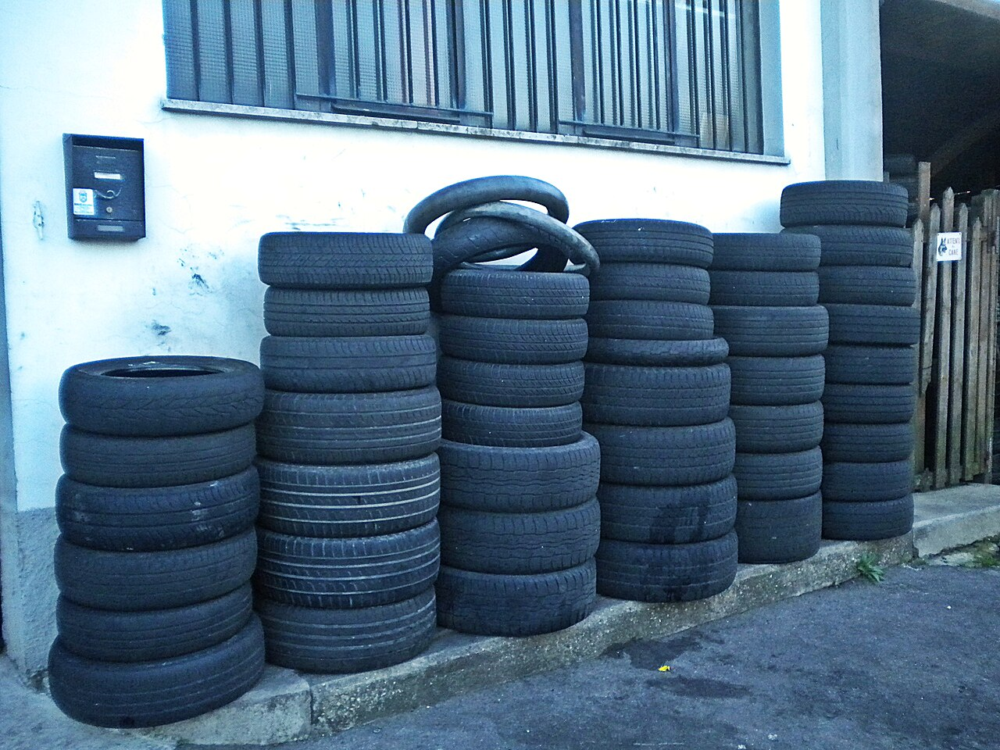

How to Store Your Summer Tires (and the Mistake That Ruins Them)
Six months in the wrong spot can ruin a good set of tires. Store them right and they come back like new.

Photo: Massimilianogalardi, CC BY-SA 3.0, via Wikimedia Commons

Your summer tires did a whole season of good work, you swapped them off in October, and now they're leaning against the garage wall — or worse, sitting in a sunny corner of the yard under a tarp. Come spring, they're cracked, flat-spotted, or just tired in a way they weren't in the fall. Tire storage sounds like a small thing, but rubber is a living material: heat, sunlight, and ozone quietly age it while it sits. Store them wrong and you shorten their life by years.
Why it's wrong
The biggest mistake is leaving tires somewhere hot, sunny, or near electric motors. Sunlight breaks down rubber — that's why tires left outside go grey and crack. Heat accelerates the same process, so a spot next to a furnace or water heater is nearly as bad. Electric motors (furnaces, compressors, freezers) produce ozone, which attacks rubber and causes the fine sidewall cracking you'll see on old tires. Stacking tires upright and leaning on one spot for six months can also flat-spot them, and storing them dirty lets brake dust and road grime eat into the rubber all winter. The tires that come out in spring should be the tires that went in in fall — not a worse version of them.
The right way
- Clean them before storing. Wash off brake dust, road salt, and grime with soap and water, and let them dry completely. Don't dress them with shiny tire dressing — some products contain solvents that age rubber.
- Mark each tire's position. A piece of chalk or tape marked LF, RF, LR, RR lets you rotate them properly when they go back on.
- Bag them. Large tire bags (or big lawn bags with the air squeezed out) keep out light, dust, and ozone. Seal them loosely — you're keeping light out, not creating a vacuum.
- Store them cool, dark, and dry. A basement corner or a cool garage shelf is ideal. Avoid attics, sheds that bake in the sun, and anywhere near a furnace or electric motor.
- Stack them flat, or hang them. Tires on rims can be stacked flat or hung from hooks. Tires without rims should stand upright and be rotated occasionally so they don't flat-spot.
- Keep them off concrete if you can. Concrete wicks moisture. A piece of cardboard or plywood underneath is enough.
- Check them in spring before mounting. Look for cracking, check the tread, and check the pressures once they're on the car.
The rundown
Clean, dry, bagged, cool, dark, and away from motors and sunlight. That's the whole formula. A few minutes of care in October protects a set of tires worth hundreds of dollars — and the set that comes out in spring should be just as good as the one that went in.
← Back to the winter tires guide
Watch: How to Store Your Tires the RIGHT Way (Don't Make These Mistakes!)
🛞 Check your pressures FREE TOOL
Before the summers go back on, check the numbers. The Cold Tire Pressure Calculator shows what your tires will read at any temperature.